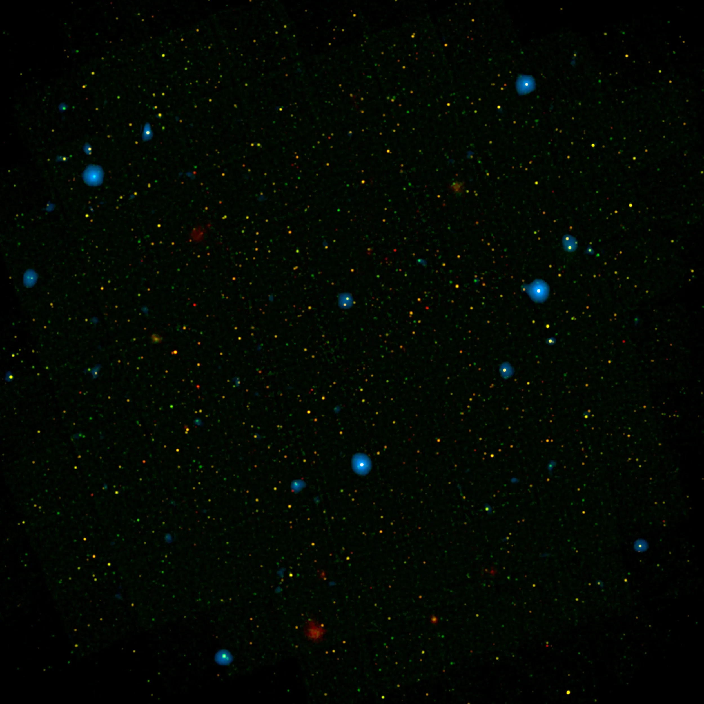

Welcome to the Orrery Web App
Explore the wonders of the universe!
Start
AG Carinae
Hubble Spots Fireworks in Westerlund 2
Hubble Studies the Pillars of Creation
Keyhole Nebula

Space Fact: The universe is about 13.8 billion years old!